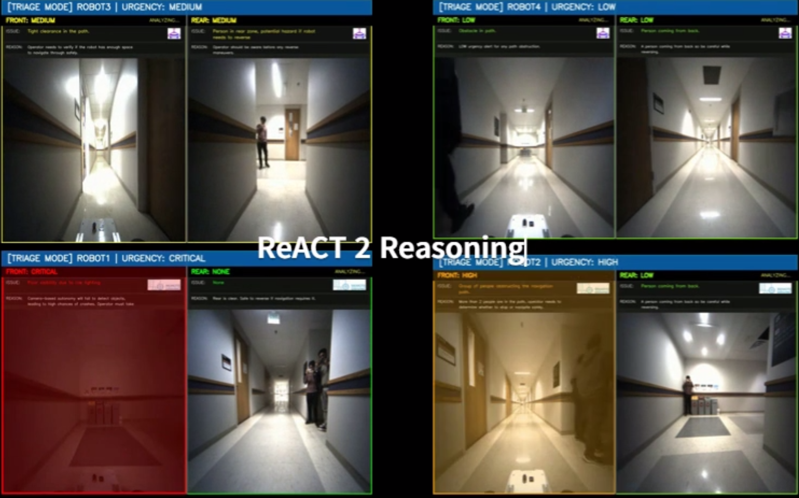
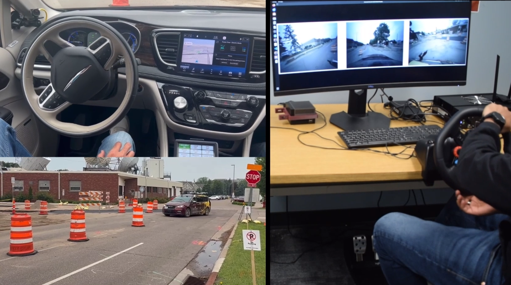
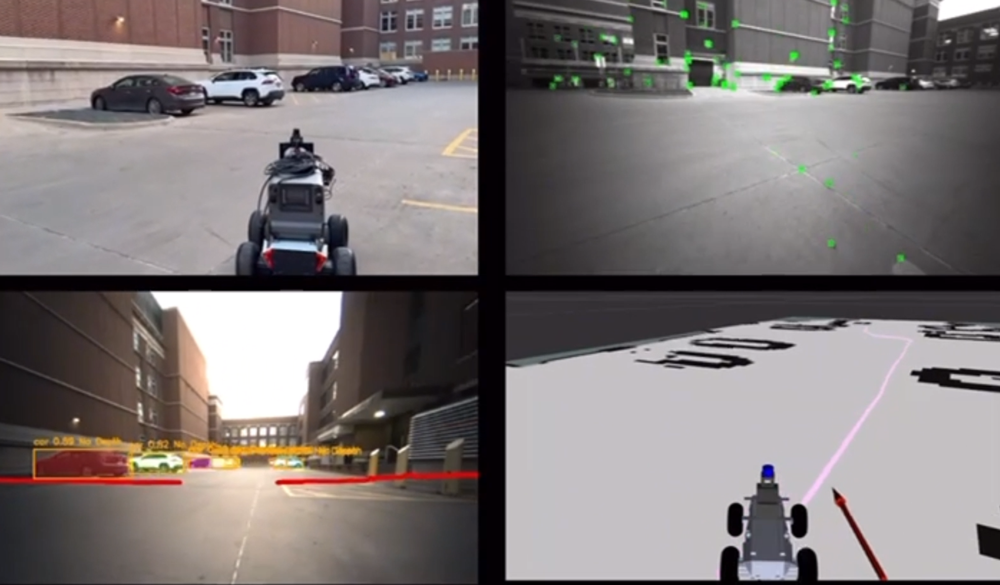
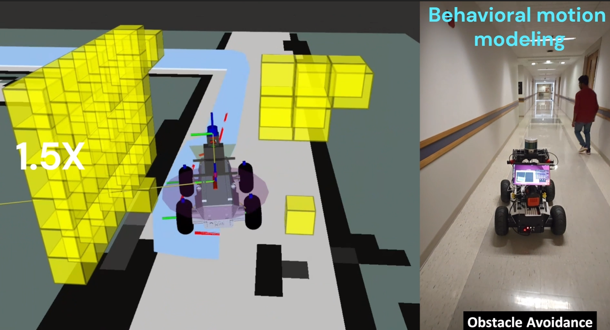
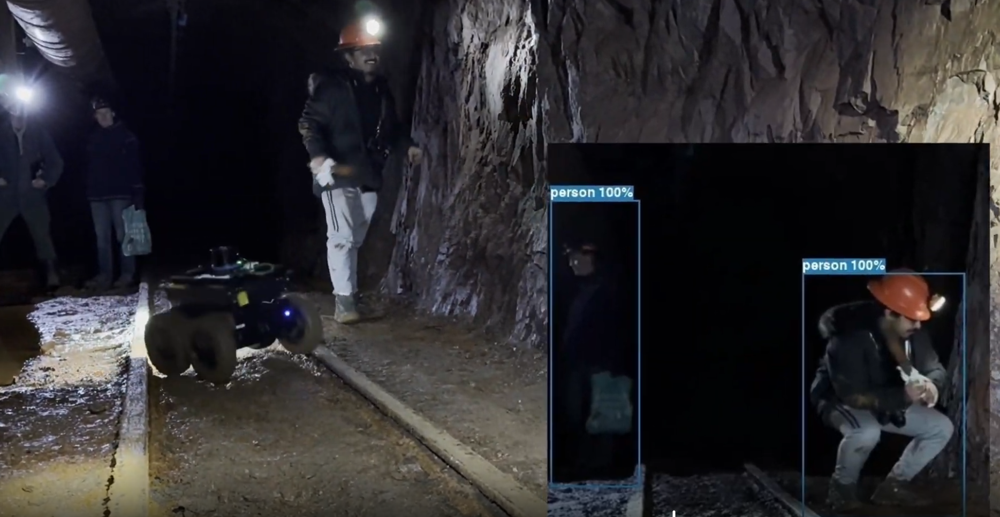
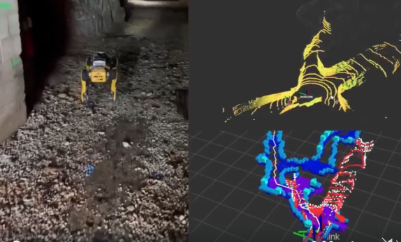
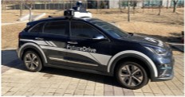
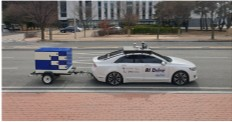
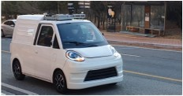
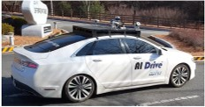

Ajay Kumar
I am currently a Research Associate in the Department of Computer Science & Engineering at the University of Minnesota, working on autonomous systems, teleoperation, and network-aware intelligent robotics. Previously, I served as a Postdoctoral Research Fellow at DGIST (South Korea), where I worked on Level-4 autonomous driving, including localization, 3D mapping, sensor calibration, and perception systems.
My research lies at the intersection of robotics, mobility, and artificial intelligence, with a strong focus on real-world deployment challenges. I develop algorithms and system-level solutions that enable intelligent agents to perceive complex environments, collaborate with humans, and operate reliably under communication and sensing constraints. My research interests include multimodal perception, remote driving, AV-edge collaborative intelligence, vision-language reasoning, and communication-aware autonomy. I have contributed to multiple research projects spanning autonomous driving, V2X-enabled safety, and human-in-the-loop systems, with applications in transportation, robotics, and intelligent infrastructure.
News
- 2026.04: Personal academic homepage launched on GitHub Pages.
- 2026.04: Ongoing work on teleoperation, adaptive streaming, and VLM-driven reasoning for human intervention in autonomous systems.
- 2026.03: Continued development of AV-edge collaborative perception and communication-aware remote driving frameworks.
Research Projects
Ongoing Projects


Completed Projects








Publications
Selected Publications


All Publications
- MSM-Transformer: Cross-View Geo-Localization for Drone Image Matching. Ajay Kumar and collaborators. Add venue, year, and link.
- Precise Synchronization Between LiDAR and Multiple Cameras for Autonomous Driving: An Adaptive Approach. Ajay Kumar and collaborators. Add venue, year, and link.
- Toward Scalable Remote Driving Systems: Adaptive Video Streaming and Human-Factor Requirements for Real-World Deployment. Ajay Kumar and collaborators. Ongoing work.
- VLM-Driven Proactive Escalation for Human-in-the-Loop Autonomous Driving. Ajay Kumar and collaborators. Ongoing work.
Honors and Awards
- Add awards, recognitions, invited talks, or distinctions here.
Education
- Ph.D. - Add university, department, year, and advisor details here.
- Current Position - Research Associate, University of Minnesota.
- Previous Position - Postdoctoral Research Fellow, DGIST, South Korea.
Services
- Workshop organization and academic service activities.
- Conference reviewer / TPC member details can be added here.